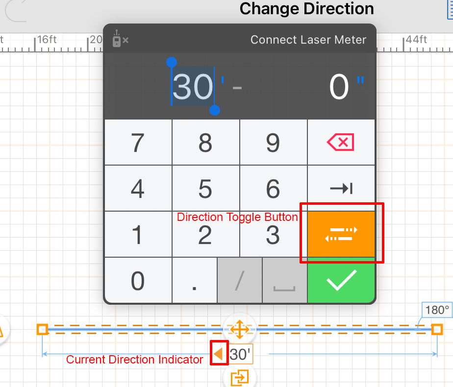

Can a salesperson record and revise the signed job?
Independent task-based sessions in the existing app, followed by a comparison with established drawing and review patterns. The focus is measured entry, corrections and an understandable office handover.
These are simulated user sessions, not research with human participants. Outcomes identify hypotheses and reproducible interaction problems; they do not establish a human completion rate, satisfaction score or time saving.
What each agent could accomplish
| Role and task | Completed or understood | Unresolved or difficult | Outcome |
|---|
Tasks differ by role, so the outcomes are not combined into a single percentage. Method and scenario briefs.
What we learned beyond the earlier audit
Preserve measured facts during edits
Connected geometry and proportional anchors explain the length side effects, but the salesperson needs to see and choose them. Height entry also needs explicit replacement semantics.
Correction evidencePrecision needs numeric controls
Both first-entry sessions missed their gate offset. Define the run start, allow typed station and width, and make the height reference explicit at the wall.
Gate and height evidenceSaved is not received
Notes and specifications persisted. The office still could not establish the signed source, submitted version or delivery of its clarification.
Recipient evidence| Finding | Evidence and confidence | Proposed response | Priority |
|---|---|---|---|
| S01 / Connected correction | Observed 8,400 / 5,016 / 2,100 mm after one length edit. Parent source check confirms shared-endpoint movement and proportional anchoring. | Preview affected dimensions; choose fixed endpoint and preserve measured gate offsets. | High: unintended sale changes |
| S02 / Height revision appends | 1,800 and 1,600 mm instructions covered the same range. Parent source check confirms height Save adds an event without replacing the old one. | Edit existing values; replace or explicitly resolve overlapping instructions. | High: conflicting recorded facts |
| S03 / Gate position entry | Novice: 1,992 vs 2,000 mm. Hebrew: 201.4 vs 200 cm. Encountered dialog shows station as text, confirmed in source. | Numeric offset, visible start marker and an edit-existing-gate path. | High: exact task blocked |
| S04 / Height reference | 180 cm intent minus 40 cm wall produced 140 cm panel. This matches generator logic; it is a meaning problem, not a proven arithmetic bug. | Distinguish panel height above base from total top height; show both in elevation. | High: clarify sold meaning |
| S05 / Misleading hints | Wrong cm example and missing House/Street/Model hint keys were observed and independently checked in both locale files. | Correct the conversion example and provide tool-specific click/drag instructions. | Medium: confirmed text defects |
| S06 / Resume current job | Novice reload opened the sample project, not the active customer. The customer job was recoverable; no data loss established. | Restore the selected job and make saved/current-project state unmistakable. | Medium: navigation continuity |
Existing model-summary and reload-label defects were independently encountered again. Readiness, source attachments and receipt remain earlier gaps, not six newly counted bugs. The first novice job-details save also needed a retry, but its cause is unconfirmed and may depend on automation entering during initialization. Parent verification and limits.
Patterns worth adapting to the existing editor
These are documented product patterns. Applying them to Fence AI is our design hypothesis, not a claim that the alternatives have already been tested here.
Keep measurements within reach
A measurements box accepts exact dimensions and explicit units while drawing.
Official Measurements Box guideExpose what Fence AI already does
Keep typed lengths and snapping, but make the active measurement and endpoint confirmation easier to find. This is a discoverability change before it is a geometry rewrite.
Show which endpoint will move
A direction indicator and toggle identify which side changes during a length edit.
Official direction-control guidePreview the effect before applying
Show the fixed corner, moving corner, adjoining stretch and affected gate offset. Let the user choose the intended endpoint rather than discovering the consequences afterward.
Protect manually entered measurements
Manually adjusted dimensions can remain locked while connected elements are edited.
Official dimension-locking guideDistinguish confirmed from approximate
Show which lengths were measured and surface conflicts. Start with endpoint choice and impact feedback; a general constraint solver would be a larger domain decision.
Import, calibrate, then trace
Known distances establish scale before measurements are taken from an imported plan.
magicplan import workflowBluebeam scale calibration
Use the source according to its quality
A to-scale survey can support tracing. A rough hand sketch should be a visual reference, with each written field measurement entered explicitly. One calibration cannot repair arbitrary sketch distortion.
Review facts with direct change links
Review entries link back to prefilled edits and return to the summary afterward.
Official check-answers patternMake the saved job readable
Summarize every stretch's model, height, base and gate alongside notes and source material. Keep the existing canvas; the review need not become a new wizard.
Link problems to their inputs
An error summary points to the affected answer. Service failures are distinct from incorrect input.
Error-summary patternError-message guidance
Turn a gap into a repair action
Select the affected run and open its editor from the missing item. An unavailable readiness check should offer retry, never report a ready job.
ArcSite's direction control
The arrow makes a geometric consequence visible before the measurement is committed. The transferable idea is explicit direction, not the entire numeric keypad.
Image from ArcSite's official help article. This is another product, not an implemented Fence AI screen.

Changing one measured length can change its neighbour
This simplified L-shaped example starts with an 8 m street stretch and a 5 m side stretch. Compare holding the start point fixed with holding the shared corner fixed. It illustrates choices to make visible; it is not the production editor or a full constraint solver.
Dashed gray = original geometry. Green = proposed street stretch. Blue = adjoining side stretch. Gate offset is measured from the start of the street run.
The gate controls compare two anchoring policies. They are a design illustration, not new controls in the current app.
Three ways to enter the sold layout
What to test next with actual staff
- Make the existing measured path discoverable.
Use the same L-shaped signed job. Check whether a salesperson finds exact-length entry and verifies both runs without coaching.
- Test correction with explicit endpoint and gate-offset feedback.
Change 8 m to 8.4 m while preserving a 5 m side and a known gate offset. Record unintended changes and whether the user detects them before saving.
- Test the handover with the recipient.
Have office staff answer the sold-scope questions from the saved job and sources. Record every clarification they still need, rather than relying on the app's ready banner.
- Compare measured redraw and source annotation.
Use equivalent signed sketches. Measure exactness, omitted facts, corrections and office effort; do not choose solely by speed or visual preference.
The earlier readiness bugs remain prerequisites: failed checks must not report ready, and partial specifications must not count as full coverage. Open the reproduced bug list.
Study records
Scenario and method · Research notes and source links · Earlier engineer-led UI audit
The reports distinguish observations from suggestions. Agent simulations do not represent a sample of employees. Seeded catalog data and setup projects are examples. No application feature changes were made during this study.